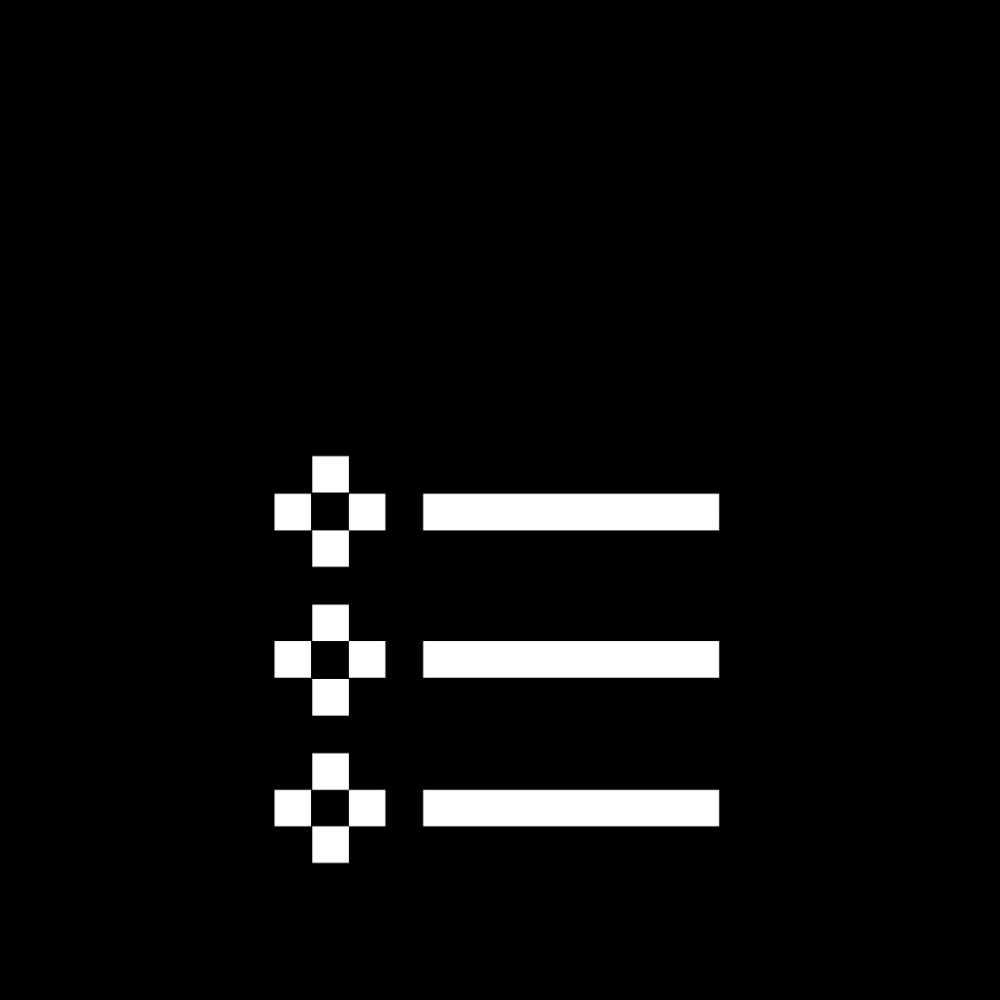

Tópicos
Tópicos 0 e 1 - 17/08
Instruções gerais sobre a disciplina. Visão geral sobre o funcionamento da web, com foco nas interações navegador-servidor, e contextualização da Programação para Web.
Tópicos 2 e 3 - 24/08
Hypertext Markup Language (HTML) e estrutura de documentos HTML (tags, declarações DOCTYPE, elementos HTML e atributos de elementos HTML). Exemplos de elementos HTML (parágrafos, títulos, imagens, hyperlinks, tabelas, listas e iFrames).
Tópicos 4 e 5 31/08
O elemento HEAD de HTML. Layouts via HTML.
Tópicos 6 e 7 - 14/09
Cascade Style Sheets (CSS): definições, sintaxe e formas de utilização. Cascade Style Sheets (CSS): propriedades de fundo de tela, de texto e de fonte.
Tópico 8 - 21/09
Cascade Style Sheets (CSS): propriedades abreviadas e o modelo de caixas (box model).
Tópicos 9 e 10 - 28/09
Programação no front-end com JavaScript: definições, sintaxe, instruções e o objeto DOM. Detecção e reação a eventos via JavaScript.
Tópicos 11 e 12 - 05/10
Manipulação de formulários HTML via JavaScript. Orientação a objetos em JavaScript.
Tópicos 13 e 14 - 26/10
Programação no back-end com PHP: infraestrutura necessária e aspectos gerais da linguagem. Aspectos específicos da linguagem PHP: operadores, estruturas de controle e funções.
Tópico 15 - 09/11
PHP e formulários HTML, Server Side Includes
Tópicos 16 e 17 - 23/11
Orientação a objetos em PHP. Acesso a Bancos de Dados em PHP via PHP Data Objects (PDO).
Tópicos 18 e 19 - 30/11
Cookies e sessões em PHP. Comunicação assíncrona de dados entre back-end (aplicações em PHP) e front-end (scripts em JavaScript).